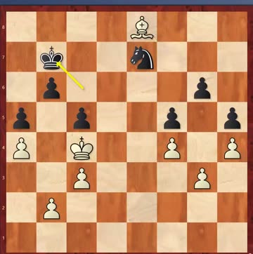
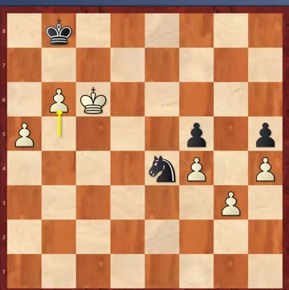
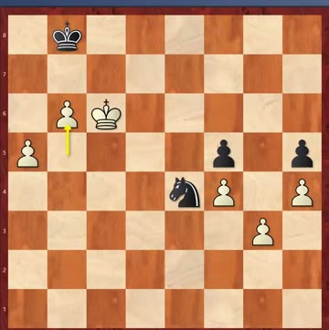
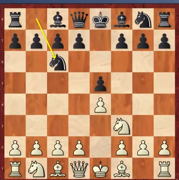
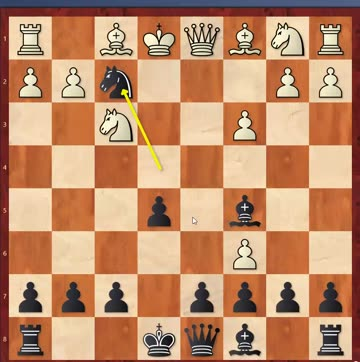
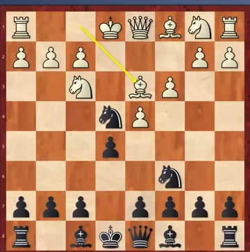

“Don't stop until it's king against king”
One number runs through the whole class: four. Coach set the standard for the weekend group out loud — you should be able to calculate four moves ahead. Every homework puzzle this week was a mate in four, and he said so each time.
Next term he wants six. Nobody got all six puzzles this week — the best scores were four out of six, and he was fine with that as long as you go back and find out where the calculation broke.
All six are mates in four. We don't have a photo of this sheet, so there are no playable boards for it — these are Coach's answers as he gave them in class.
Nobody got all six. Four out of six was the best in the room. “没关系，及时总结，错在哪 —— 对你们的帮助更大” — that's fine; work out where you went wrong, straight away. That helps you more.
The set before this one, 31–36, is now unlocked with full answers. This week's new sheet is 43–48, hidden.
Candidates quarter-final, Vancouver · May 1971 · Fischer won every game · game 4 shown: B47, 25 May 1971, 1–0
Why Fischer had been away. He'd won the US Championship seven times, once 11–0. Then he stopped playing FIDE events for about five years, because the Candidates was an all-play-all and the four Soviet players could quietly help each other and gang up on him. He wanted one-against-one knockout matches — like Wimbledon, as Coach put it. FIDE eventually agreed and changed the format, and Fischer came back.
His first opponent was Taimanov, and the result was 6–0. At that level draws are normal, so beating a top grandmaster six times out of six without even one draw stunned everyone.
Coach has met him. In St Petersburg in 2013, when Taimanov was over 90 — there's a photo of the two of them with Ding Liren, taken as Taimanov handed Ding a best-attacking-game prize. Coach says he'll dig it out for next week. Taimanov was also a concert-standard pianist: when he played in a tournament, the organisers didn't need to book a musician for the opening ceremony.
Game 2 is the one to learn from. It reached an ending that was a theoretical draw — Taimanov only had to trade his knight for the last pawn. Tal said he wouldn't even have bothered playing it out. Fischer played on anyway.
Taimanov thought he didn't need to walk his king forward, because the knight-for-pawn trade was always there. It wasn't. Fischer squeezed, put him in zugzwang — every move loses something — and the king could no longer get back. A theoretical draw, lost. Taimanov's blood pressure went through the roof and he was taken to hospital; Fischer agreed to wait three days rather than claim the win, which Coach thought was decent of him.
Game 4: the bishop-versus-knight ending — the one in all the endgame books, and the main event of the lesson.



The three things to remember from it:
And the story from game 3. Fischer complained to the arbiter that Taimanov's shoes were too loud when he walked around. Taimanov agreed to walk further away — but asked that Fischer stop jiggling his leg and tapping his foot under the table. Fischer agreed. Coach's verdict: that was the only time in the whole match Taimanov beat him, and it wasn't on the board.
Afterwards. Losing 0–6 to an American at the height of the Cold War went very badly for Taimanov back home — he lost privileges and was treated harshly. What rescued him was the next match: Fischer beat Larsen of Denmark 6–0 as well, and suddenly everyone could see it wasn't Taimanov who was bad. Next week Coach covers the Larsen match.
C44 Ponziani Opening · 1.e4 e5 2.Nf3 Nc6 3.c3 · this is the Black side again
What it is, and why you'll see it. White plays 3.c3, planning d4 and a big centre. It's from 1769 — nearly three hundred years old — and Coach says people still play it in Bay Area tournaments, so it's worth knowing.
He doesn't recommend it as White (he'd rather you played Bc4 or Bb5), and the reasons are the reasons Black is fine: 3.c3 is a pawn move, not a developing move, and it takes away c3 from White's own knight.



The line Coach taught. 1.e4 e5 2.Nf3 Nc6 3.c3 Nf6 4.d4 Nxe4 — take the pawn. Now if White grabs back with 5.d5? comes the move: 5…Bc5!, and f2 can't be held.
It runs 6.dxc6 Bxf2+ 7.Ke2 Bb6 8.Qd5 Nf2 — check, then the bishop steps back and the knight comes to f2 anyway, hitting the queen. White's king is stuck in the middle of the board with nothing around it. The engine agrees with Coach: Black is better by about a pawn and a half, and the king is the reason.
If White knows the trap he plays 5.Bd3 instead, which is the best move — it keeps the d4 pawn and stops …Bc5. Then just play 5…d5 to defend the knight, develop, and castle. The game is level, and that's a perfectly good result out of the opening.
Don't play 5…Nf6 there. It gives up the pressure on f2, and 6.dxe5 wins the pawn back with tempo.